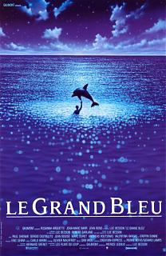

Au 28ème siècle, Valérian et Laureline forment une équipe d'agents spatio-temporels chargés de maintenir l'ordre dans les territoires humains. Mandaté par le Ministre de la Défense, le duo part en mission sur l’extraordinaire cité intergalactique Alpha - une métropole en constante expansion où des espèces venues de l'univers tout entier ont convergé au fil des siècles pour partager leurs connaissances, leur savoir-faire et leur culture. Un mystère se cache au cœur d'Alpha, une force obscure qui menace l'existence paisible de la Cité des Mille Planètes. Valérian et Laureline vont devoir engager une course contre la montre pour identifier la terrible menace et sauvegarder non seulement Alpha, mais l'avenir de l'univers.
Mission sur alpha
> Un rêve de gosse
20 ans après la sortie du Cinquième élément, le cinéaste français,Luc Besson, réalise son vieux rêve de gosse avec Valerian, la cité des mille planètes. C'est du moins ce qu'il a expliqué au quotidien Ouest France. Valérian, c’est un héros de mon enfance depuis que j’ai 10 ans. Par contre, je n’avais jamais imaginé le faire au cinéma [...] La technologie n’était même pas là pour faire un truc avec deux personnages et 500 aliens autour. C’est vraiment le film Avatar qui a rendu tout possible. La technologie inventée par James Cameron et les outils qu’il a laissés ont rendu la chose envisageable. Donc, il y a sept ans, on a dit, "essayons !".
Pour réaliser ce rêve, Luc Besson s'est donc entouré d'un casting de rêve comprenant :
Cara Delevingne,
Dane DeHaan,
Clive Owen
et une certaine Rihanna.
A propos de cette dernière, Luc Besson ne tarit pas d'éloges : Elle n’est pas comédienne de base mais elle a beaucoup de choses en commun avec une comédienne. Parce que je savais qu’elle allait avoir des scènes émouvantes et que c’est la numéro un mondial avec une carapace de 40 cm de crocodile. Il n’y a rien qui l’atteint. Donc pour aller chercher l’émotion, il faut qu’elle vous y autorise. Et elle a été très humble. Elle a laissé tout son entourage dehors du plateau.

Affiches des succès de Luc Besson
> Seven sisters
2073. La Terre est surpeuplée. Le gouvernement décide d’instaurer une politique d’enfant unique, appliquée de main de fer par le Bureau d’Allocation des Naissances, sous l’égide de Nicolette Cayman. Confronté à la naissance de septuplées, Terrence Settman décide de garder secrète l’existence de ses 7 petites-filles. Confinées dans leur appartement, prénommées d’un jour de la semaine, elles devront chacune leur tour partager une identité unique à l’extérieur, simulant l’existence d’une seule personne : Karen Settman. Si le secret demeure intact des années durant, tout s’effondre le jour où Lundi disparait mystérieusement…
7 soeurs, une seule identité
Musique
Jean-Louis Aubert, Louis Bertignac et Richard Kolinka ont mis le feu à la plaine de Kerhampuilh, à Carhaix, lors de la première soirée des 25es Vieilles Charrues. 2 heures de pur bonheur pour tous les festivaliers venus nombreux pour revoir sur scène le plus grand groupede rock français des années 80.
> Les insus en ouerture de la 25ème édition
Jeunes et moins jeunes ont repris en choeur les classiques de Téléphone, désormais Insus. Acclamés par une foule qui semblait avoir attendu toute la journée l'entrée en scène des trois rockeurs, Jean-Louis Aubert, Louis Bertignac et Richard Kolinka n'ont pas traîné pour enflammer cette première soirée de la 25e édition des Vieilles Charrues.
Dès les premières notes de Crache ton Venin, les milliers de spectateurs qui s'étaient donnés rendez-vous devant la scéne Glenmor ont fait monter l'ambiance cresendo.
Les Insus mettent le feu à Kerhampuilh !
> Affluence record !
L'événement a rassemblé pas moins de 280.000 personnes en
quatre jours. Du jamais vu pour le plus grand festival de France. Un
succès qui doit beaucoup à sa programmation prestigieuse et à
quelques nouveautés. Après une édition 2016 historique, le festival
des Vieilles Charrues a mis la barre encore plus haut cette année.
Avec plus de 280.000 festivaliers (dont 6.800 bénévoles),
le rassemblement a réuni encore plus de monde que l'an dernier (280.000
), améliorant ainsi le record de fréquentation du festival fondé en
1992.
C'est le plus beau des cadeaux, c'est du jamais vu! Cette confiance
du public nous touche et nous va droit au cœur, avouent Jean-Luc
Martin et Jérôme Tréhorel, respectivement président et directeur
général de la manifestation bretonne. Nous sommes vraiment fiers de
nos équipes salariées et des bénévoles: grâce à leurs efforts
combinés, les nombreux défis ont été relevés, et toutes les
nouveautés ont largement comblé nos attentes. Pour espérer avoir
une place, il fallait, c'est vrai, s'y prendre à l'avance.
Si une radio (en collaboraFon avec Deezer( a également vu le jour, la sécurité demeurait cette année
la priorité de l'organisaFon. Face à une alcoolisaFon importante (notamment des mineurs(, le préfet
du Finistère a exigé de réduire les contenants d'alcool. Le pichet de bière d'un litre a ainsi été
supprimé.
Affluence des Vielles charrues de 2014 à 2017
Affluences des 4 dernières années